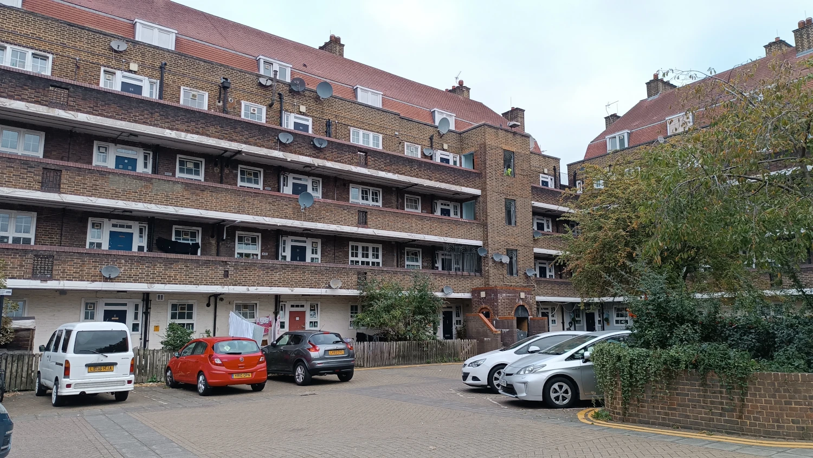
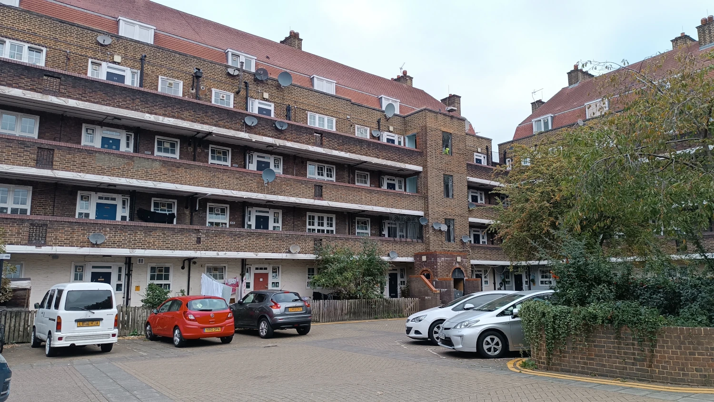
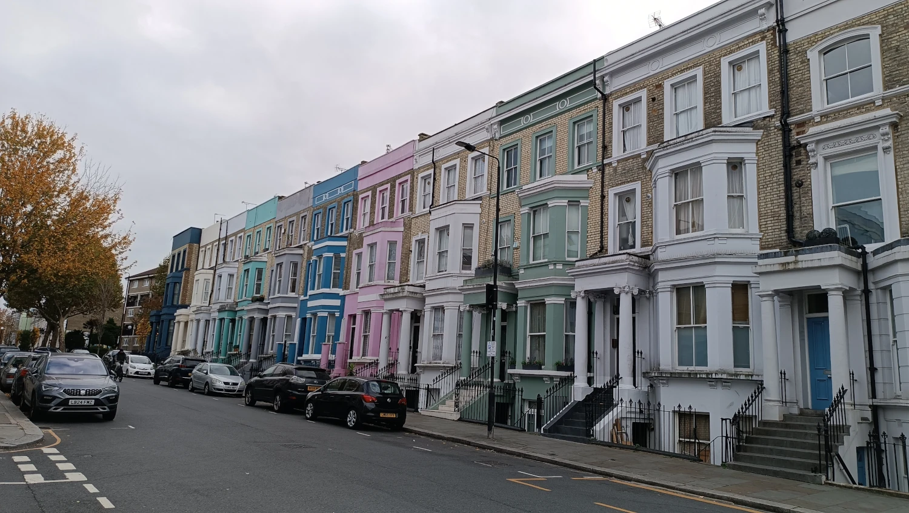
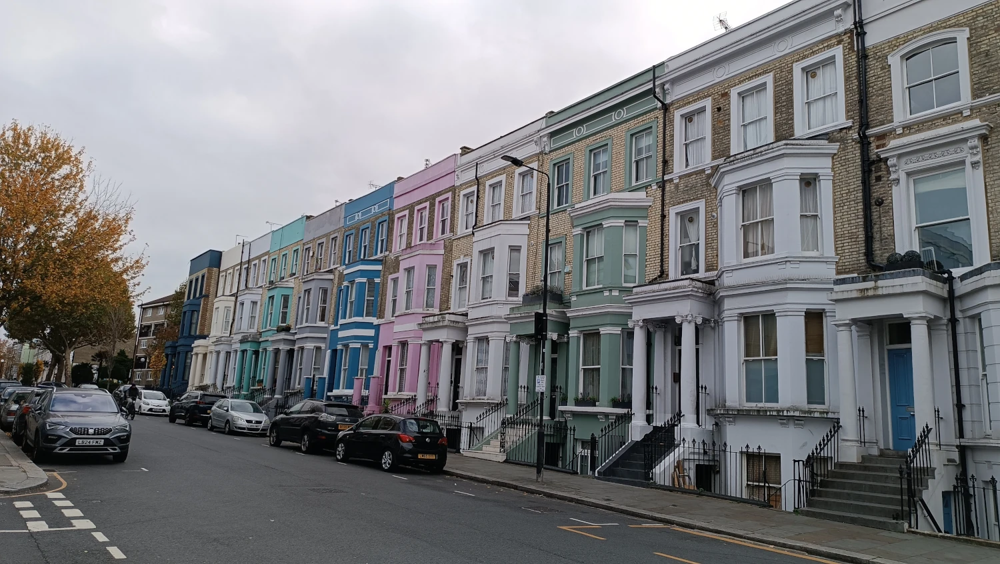
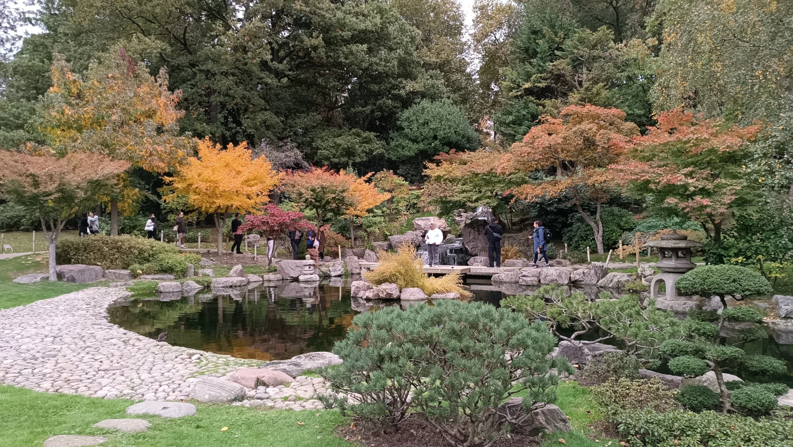
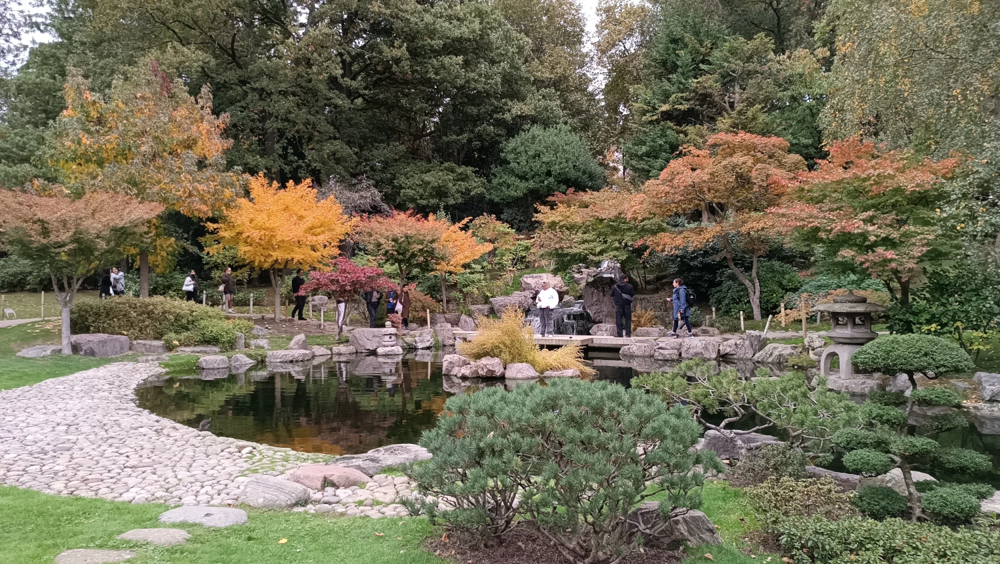
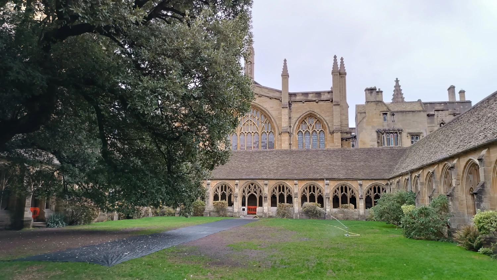
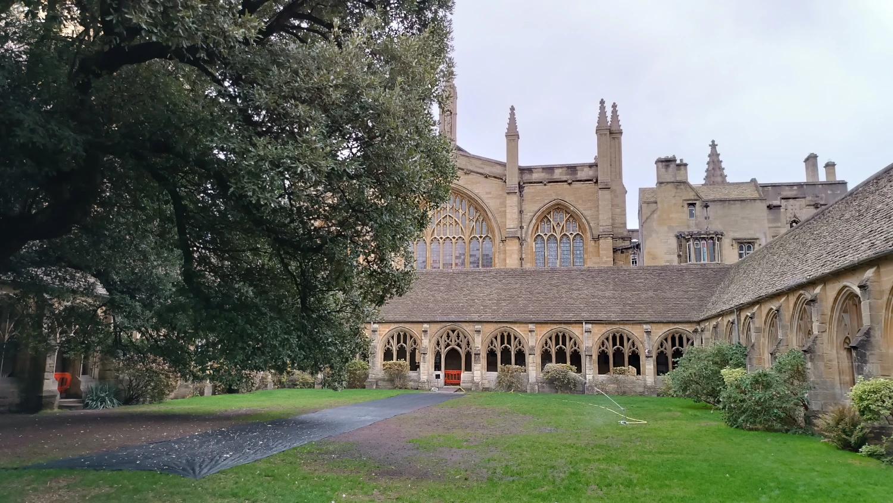

Brána do čarodějného světa
Londýn, Oxford

Naše vysněná cesta začala koupí vstupenky do ateliérů, které dostala partnerka k narozeninám. Hned potom jsme se s nadšením pustily do plánování. První zádrhel ale přišel už při pořizování druhého lístku. Nejspíš jsme špatně pochopily angličtinu – pro mě „Buy Tickets“ znamenalo zakoupení vstupu do ateliérů, ale ve skutečnosti šlo o jízdenku na autobus. Výsledek? Zvolily jsme špatný čas a problém byl na světě. Trvalo asi tři dny, než jsme všechno vyřešily a vstupenky nám přebukovali. Pak už zbývalo jen sladit termíny a najít rozumně naceněné letenky.
Ubytování jsme zajistily přes AirBnB. Vybraly jsme si byt v londýnské čtvrti Lambeth, nedaleko Victoria Station, abychom nemusely složitě cestovat napříč celým městem.
Ubytování bylo v anglickém „palačáku“ a zdálo se, že jsme tam byli téměř sami. Pokoj byl krásně zařízený, voňavý a připravený, abychom se v něm mohly zabydlet.
První cesta vedla do Oxfordu, kde jsme chtěly nasát atmosféru před návštěvou ateliérů plánovanou na následující den. Jenže osud to chtěl jinak. Spletly jsme si datum vstupu a o možnost návštěvy ateliérů přišly. Byla to největší rána celé dovolené. Tak to dopadá, když člověk na dovolené pracuje a má v hlavě víc práci než volno — chyba. Nedělejte to. Nepracujte na dovolené. Hledaly jsme tedy náhradní program a vyrazily do přírody nedaleko centra. Člověk by nevěřil, že je stále v Londýně.
Navštívily jsme také Přírodopisné muzeum — a to bylo naprosto úžasné. Vstup byl zdarma, takže tam bylo hodně lidí, ale architektura i samotné sbírky stály za to: obrovská kolekce minerálů, vycpaní ptáci, obří plejtvák, fosilie a mnoho dalšího. Bylo to opravdu krásné.
Naší předposlední zastávkou byla Grenfell Tower. Viděly jsme dokument o požáru v roce 2017, při kterém zahynulo mnoho lidí, a chtěly jsme místo vidět na vlastní oči — i když je to trochu morbidní zvědavost. Budova už se začala postupně rozebírat, takže jsme ji zastihly právě včas. Poté jsme se propletly uličkami až na Portobello Road, kde zrovna probíhala pouliční akce s prodejci na stáncích. Táhla se snad 850 metrů — téměř celou ulicí. Navíc ji lemují nádherně barevné domy, takže je to pastva pro oči. Na jejím konci jsme si daly muslimské poke bowl, které bylo srovnatelné s tím naším doma — prostě výborné.
Plány na další dovolenou jsou tedy jasné: návštěva ateliérů, vypnutý telefon a výlet jen na otočku.
Galerie
 



 

 


Oxford: univerzitní město s kouzelnou atmosférou

Oxford patří k nejstarším a nejznámějším univerzitním městům na světě. Jeho historie sahá až do 12. století a dodnes tu studují tisíce studentů z celého světa. Dominantou města jsou nádherné univerzitní koleje, kaple a knihovny, mezi nimiž vyniká slavná Bodleian Library. Při procházce ulicemi narazíš na malebné hospůdky, historické sály i klidné zahrady.
Město je spjaté nejen s vědou a vzděláním, ale i s kulturou a filmem. Právě zde se natáčely některé scény z Harryho Pottera – třeba chodby Christ Church College, které si fanoušci okamžitě spojí s Bradavicemi. Oxford tak spojuje atmosféru dávné historie s kouzlem filmového světa a nabízí nezapomenutelný zážitek pro každého návštěvníka.
Galerie


 
